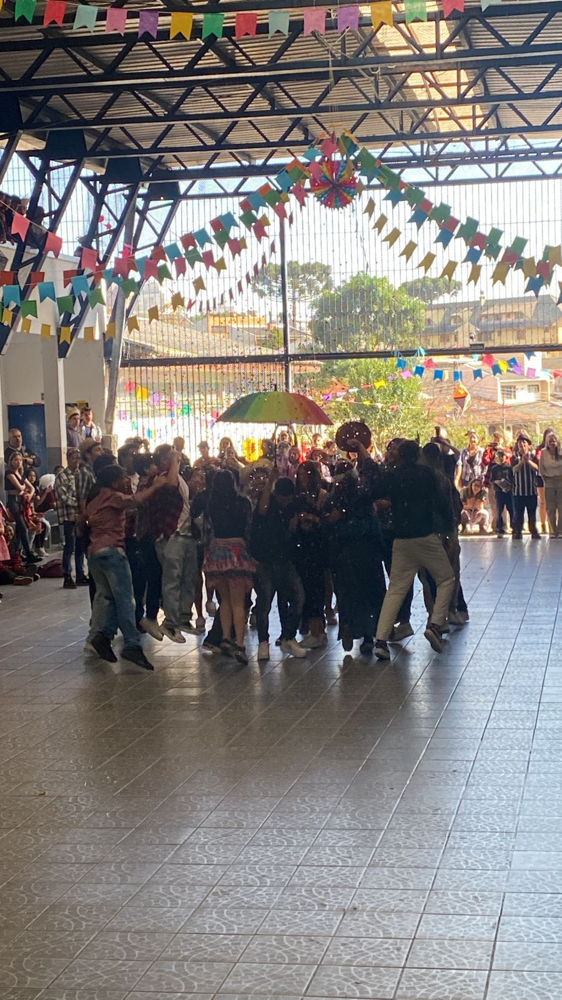
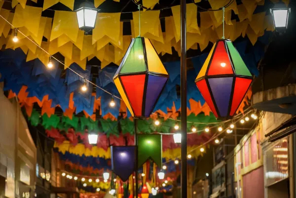
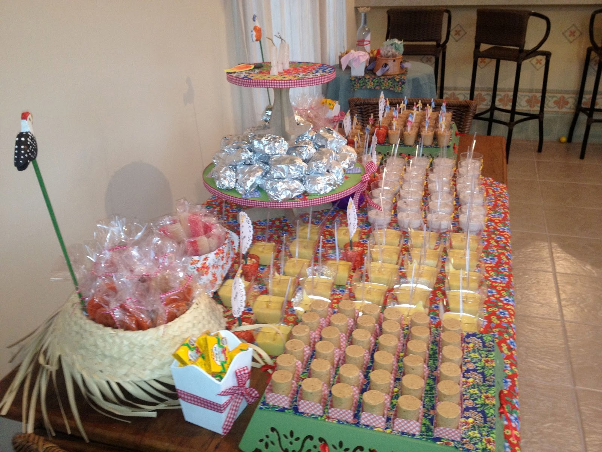
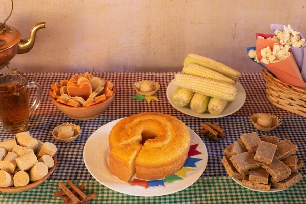
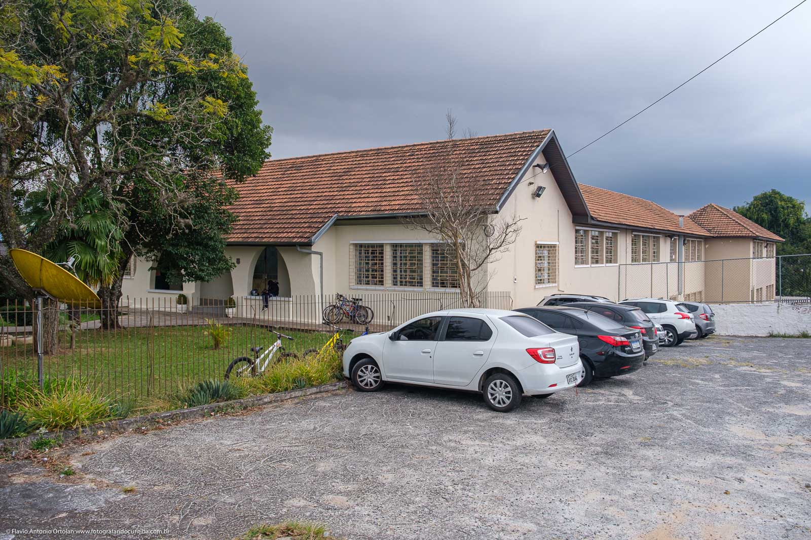
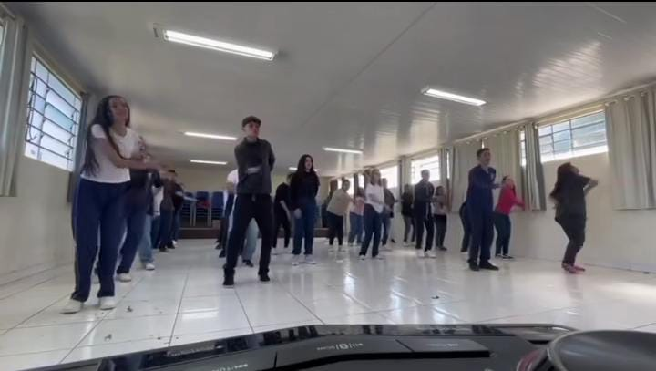
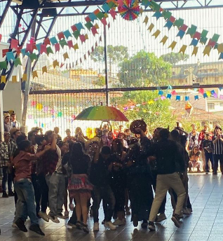
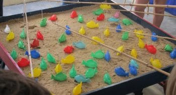

Sobre a festa
A festa junina é uma celebração tradicional no Brasil e no CCM República Oriental Uruguai, realizada no mês de julho em homenagem aos santos católicos São João, Santo Antônio e São Pedro.
A festa é marcada por comidas típicas, danças de quadrilha, músicas e decorações coloridas.


Comidas
- Crepe
- Pastel
- Bolo
- Pipoca
- Quentão


Tradições
A festa junina do CCM República Oriental Uruguai é conhecida por suas tradições, como as comidas, decoração, vestimentas e, principalmente, a quadrilha.
A quadrilha contou com apresentações de várias turmas e dos professores, com diversas músicas. Um destaque especial foi a quadrilha do terceirão, que apresentou uma coreografia totalmente original, criada do zero.



Brincadeiras
- Pescaria
- Jogo da argola
- Correio elegante
- Boca do palhaço
- Roleta
- Cadeia
